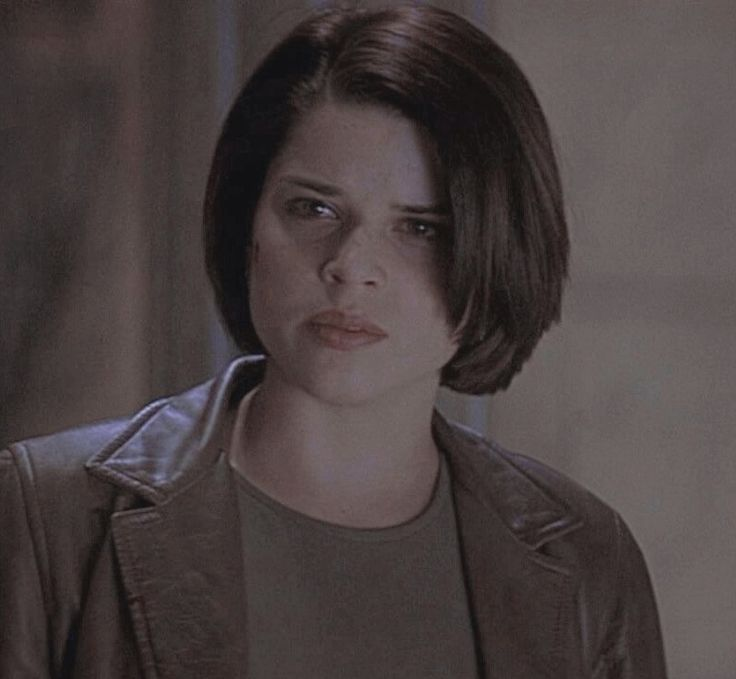
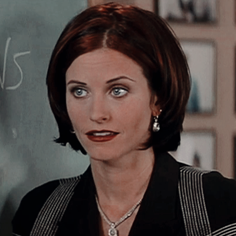

"What's your favorite scary movie?"
Personagens principais
Morreu no quinto filme

Dewey
Ocupação: Xerife
Dewey é cômico e simpático, busca ajudar os outros personagens da história. Ele tem um jeito peculiar de se vestir, com ternos e gravatas desalinhados, o que reforça ainda mais o seu jeito descontraído.
Vivíssima
Sidney Prescot
Ocupação: Estudante
Ela é uma jovem inteligente e corajosa que enfrenta inúmeros desafios enquanto lida com o trauma do assassinato de sua mãe e o constante assédio de um assassino em série conhecido como Ghostface.
Dizem que morreu mas tenho duvidas
Gale Weathers
Ocupação: Jornalista
Ela é uma repórter ambiciosa e determinada que está sempre procurando a próxima grande história. Ela é inteligente, perspicaz e destemida, e tem uma personalidade forte que a ajuda a se destacar em situações difíceis.